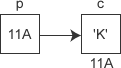

首页 > 编程笔记
C++指针的定义和使用（入门必读）
C++ 提供了一种可直接访问内存的方法，让开发者更灵活、高效地管理和操作内存，就是指针。
计算机中的数据都是存储在内存中的，内存中的这些数据都有地址，指针就是记录这些地址的变量，指针的类型表示指针所指地址上存储的数据的类型。
在计算机的内存空间中，存放的最小单位是位（bit）。一个 bit 就是一个二进制的最小单元，其值只能为 0 或者 1。8 个 bit 是一个字节（byte），字节是计算机中常用的基本单位，一般的计量都是以字节为单位的，比如 char 类型数据占 1 个字节，int 类型数据占 4 个字节， double 类型数据占 8 个字节等。在操作系统中，这些内存单元都被编上了号。通过这些编号，可以快速地找到该内存单元，这些编号就是所谓的内存地址。
在 C++ 中，可以用一个指针类型的变量来存放内存地址，这个变量被称为指针变量，或简称指针。指针与变量的关系如下图所示。
图中 c 是一个字符型变量，值为 'K'，存储在地址为 0x11A 的内存单元里。p 是一个整型指针变量，其值为 0x011A，也就是变量 c 的内存地址。在这种情况下，可以说 p 是一个指向变量 c 的指针。
指针的值是一个内存地址，这个地址可以是变量的首地址，也可以是数组的首地址，甚至是函数的地址。
因此，定义指针变量包括三个内容，从前到后依次为：
定义指针变量的语法是：
同定义普通变量一样，指针变量也可以连续定义，比如一次定义两个整型指针变量：
注意，取地址的变量必须是已经存在的变量，取地址符“&”只能应用于内存中存在的数据，如变量、数组元素等，不能用于表达式、常数或者寄存器（register）变量。
对于一个整型的指针变量 p，如果要让其指向整型变量 a，可以在定义 p 时将其初始化为 a 的地址，或者在定义 p 之后将 p 赋值为 a 的地址：
注意，在上面指针的定义中，指针变量是 p2 而不是 *p2，因此要给指针赋值，等号左边是 p2 而不是 p2。另外，不允许把一个无效的地址（比如数字）赋给指针。
指针变量和一般的变量是一样的，存放的值是可以改变的，也就是说可以改变指针的指向，例如：
与取地址运算符
注意，使用
例如下面的指针用法就是不正确的：
指针加减某个整数，其效果等同于将指针移动整数个变量的长度。假设一个整型指针 p 指向整型变量 x（占用 4 个字节的内存），而 x 的地址是 1000，则 p+1 指向的地址就是 1004，p-3 指向的地址就是 988。一般来讲，指针加减 n，就相当于指针的地址值加减 n*sizeof(指针的数据类型)。
指针与指针相减，表示两个指针间可以存储的变量的个数。假设两个 short 型指针 p 和 q 所指的地址分别是 1000 和 996，则 p-q 的值就是 2，即两个 short 型变量。
以下是一个 C++ 指针的完整实例，展示了如何使用指针来定义、初始化、操作变量。
一个指针变量，只能指向同类型的变量。比如一个整型指针只能指向整型变量，而不能指向其他类型的变量。因此不能用其他类型变量的地址初始化指针变量，或者为其赋值。
计算机中的数据都是存储在内存中的，内存中的这些数据都有地址，指针就是记录这些地址的变量，指针的类型表示指针所指地址上存储的数据的类型。
在计算机的内存空间中，存放的最小单位是位（bit）。一个 bit 就是一个二进制的最小单元，其值只能为 0 或者 1。8 个 bit 是一个字节（byte），字节是计算机中常用的基本单位，一般的计量都是以字节为单位的，比如 char 类型数据占 1 个字节，int 类型数据占 4 个字节， double 类型数据占 8 个字节等。在操作系统中，这些内存单元都被编上了号。通过这些编号，可以快速地找到该内存单元，这些编号就是所谓的内存地址。
在 C++ 中，可以用一个指针类型的变量来存放内存地址，这个变量被称为指针变量，或简称指针。指针与变量的关系如下图所示。

图中 c 是一个字符型变量，值为 'K'，存储在地址为 0x11A 的内存单元里。p 是一个整型指针变量，其值为 0x011A，也就是变量 c 的内存地址。在这种情况下，可以说 p 是一个指向变量 c 的指针。
指针的值是一个内存地址，这个地址可以是变量的首地址，也可以是数组的首地址，甚至是函数的地址。
指针的定义
指针是一个变量，存储着另一个变量的内存地址。定义指针时，不仅要指明该变量是个指针，还要说明这是一个什么类型的指针，即指针所指数据的类型。因此，定义指针变量包括三个内容，从前到后依次为：
- 指针所指向数据的类型；
- 指针类型的修饰符“*”，标注定义的是指针变量，而不是普通变量；
- 指针变量的变量名。
定义指针变量的语法是：
类型 * 指针名;例如：
int *ptr; // 定义一个指向整数的指针 double *dptr; // 定义一个指向双精度浮点数的指针
同定义普通变量一样，指针变量也可以连续定义，比如一次定义两个整型指针变量：
int *p1, *p2;需要注意的是，每一个指针变量前面的指针修饰符“*”都是必不可少的，否则该变量就不是一个指针，而是一个普通的变量。例如下面的变量定义语句：
int *p1, p2;这不是定义两个指针变量，而是定义一个指针变量 p1 以及一个整型变量 p2，因为 p2 的前面没有指针修饰符“*”。
指针的使用
1) 确定指针的指向
指针作为一个变量，跟普通的变量一样，使用之前要先定义，还必须赋予具体的值，也就是让指针指向某个具体的数据。指针的值必须是一个地址，而且必须保证它的有效性。C++中可以借助取地址符“&”获取某个变量的地址，其语法如下：使用没有明确指向的指针，可能会造成系统混乱，甚至程序崩溃。
&变量名;比如，
&x表示变量 x 的地址，&y表示变量 y 的地址。注意，取地址的变量必须是已经存在的变量，取地址符“&”只能应用于内存中存在的数据，如变量、数组元素等，不能用于表达式、常数或者寄存器（register）变量。
对于一个整型的指针变量 p，如果要让其指向整型变量 a，可以在定义 p 时将其初始化为 a 的地址，或者在定义 p 之后将 p 赋值为 a 的地址：
int a; //①：定义指针的同时为其初始化一个地址 int *p1 = &a; //②：先定义个指针，需要用的时候才指定一个地址 int *p2; p2 = &a;两种方法是等价的，不过推荐使用第一种方法，这样可以保证一开始指针就是有效的。未经初始化的指针将指向一个不确定的内存地址，操作这样的指针是非常危险的。
注意，在上面指针的定义中，指针变量是 p2 而不是 *p2，因此要给指针赋值，等号左边是 p2 而不是 p2。另外，不允许把一个无效的地址（比如数字）赋给指针。
指针变量和一般的变量是一样的，存放的值是可以改变的，也就是说可以改变指针的指向，例如：
int a, b; int *p = &a; // 指针 p 指向变量 a p = &b; // 修改 p 的指向，令它指向变量 b
2) 获取指针指向的数据
在程序中，有时需要知道指针所指的数据是什么，可以借助解引用运算符*。与取地址运算符
&相反，解引用运算符*作用于指针，得到指针所指向的变量，其语法如下：*指针名;举个简单的例子：
int x = 123; int *p = &x;想得到变量 x 的值，除了使用变量名 x 以外，还可以使用 *p 来间接地访问 x：
int a = *p; //等价于 int a = x;下面的两个赋值语句也是等效的，都可以将变量 x 的值改为 0：
x = 0; *p = 0;通过指针来访问变量，虽然其效果和直接访问变量一样，但指针毕竟是一种间接的方式，其速度略慢于直接访问。不过指针也给程序的开发带来了很大的灵活性，其原因在于指针也是一个变量，可以在运行时修改其指向，从而达到“使用一个指针，访问多个变量”的目的。
注意，使用
*获取指针所指的数据之前，必须让指针指向一个合法的地址，否则程序的行为将是难以预料的，甚至会导致系统崩溃。原因是一个非法的地址可能是某个重要的数据地址，或者是某一条程序指令的地址，它们如果被修改，则程序的行为无法预料。例如下面的指针用法就是不正确的：
//①：NULL（值通常是 0）代表的内存不能用来存储数据，会导致程序崩溃。 int *p = NULL; *p = 100; //②：没有明确指向的指针，指针所指的内存是不确定的，修改内存数据会导致无法预料的后果。 int *q; *q = 123;
3) 指针的算术运算
指针支持一些算术运算，包括指针可以加减某个整型数，指针与指针可以相减，但指针与指针相加是没有意义的。另外，指针的乘除也没有意义。指针加减某个整数，其效果等同于将指针移动整数个变量的长度。假设一个整型指针 p 指向整型变量 x（占用 4 个字节的内存），而 x 的地址是 1000，则 p+1 指向的地址就是 1004，p-3 指向的地址就是 988。一般来讲，指针加减 n，就相当于指针的地址值加减 n*sizeof(指针的数据类型)。
指针与指针相减，表示两个指针间可以存储的变量的个数。假设两个 short 型指针 p 和 q 所指的地址分别是 1000 和 996，则 p-q 的值就是 2，即两个 short 型变量。
#include <iostream>
int main() {
short* p = (short *)1000, * q = (short*)996;
std::cout << p - q << std::endl;
return 0;
}
输出结果为：
2
注意，为指针直接赋值一个具体的内存地址，这种写法是不推荐的，此实例只是为了演示两个指针相减的效果。以下是一个 C++ 指针的完整实例，展示了如何使用指针来定义、初始化、操作变量。
#include <iostream>
int main() {
// 定义一个整数变量
int number = 5;
// 打印原始值
std::cout << "原始值： " << number << std::endl;
// 定义一个指针，并将其初始化为 number 的地址
int* ptr = &number;
// 借助 ptr 简介访问变量 number
std::cout << "*ptr： " << *ptr << std::endl;
// 使用指针修改 number 的值
*ptr = 10;
// 打印通过指针修改后的值
std::cout << "通过指针修改number后的值： " << number << std::endl;
return 0;
}
运行结果为：
原始值： 5
*ptr： 5
通过指针修改number后的值： 10
总结
指针指向被释放或无效的内存称为悬空指针，使用悬空指针很容易导致程序发生异常甚至崩溃。一个指针变量，只能指向同类型的变量。比如一个整型指针只能指向整型变量，而不能指向其他类型的变量。因此不能用其他类型变量的地址初始化指针变量，或者为其赋值。
关注公众号「站长严长生」，在手机上阅读所有教程，随时随地都能学习。内含一款搜索神器，免费下载全网书籍和视频。

微信扫码关注公众号